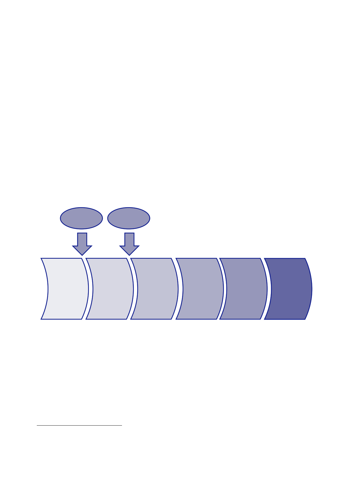

The Report
of the Iraq Inquiry
7.
The Defence
Progamme comprised three strands:
•
the
procurement of new capability through the Equipment Procurement
Plan
(EPP) which
looked forward 30 years;
•
provision
of equipment support through the Equipment Support Plan
(ESP)
which was
planned over 10 years; and
•
the
Non‑Equipment Investment Plan which planned for investment
in
non‑military
equipment, such as IT.
8.
Collectively
the EPP and the ESP were known as the Equipment Plan
(EP).
9.
Procuring
equipment was achieved through the MOD’s Smart Acquisition
process,
which was
established in 1998 and sought to enable a high level of confidence
that
equipment
projects would be delivered on time and within
budget.2
That
process is
illustrated
in Figure 1.
Initial
Gate
approval
Main
Gate
approval
Concept
User
identifies
and
defines
a
need
Assessment
A solution
is
developed
to
meet
the
User’s
need
Demonstration
Contracts
are
placed
Manufacture
Equipment
is
produced
to
meet the
User’s
need
In-service
Equipment
is
in use
and
maintained
Disposal
Equipment
reaches
the
end of its
life
and
is
disposed
of
10.
Any projects
exceeding £100m required explicit approval from the
Investment
Approvals
Board (IAB) at two stages:
•
Initial
Gate – the
approval for project initiation where the parameters for
the
Assessment
Phase are set; and
•
Main Gate
– where the
targets are set for the performance, time and cost of
the
Demonstration
and Manufacture stages.3
2
Ministry of
Defence, Acquisition
Handbook Edition 4, January
2002.
3
National
Audit Office, Ministry of
Defence: Major Projects Report 2001, 23 November
2001, HC 330;
Report
Gray, October 2009, ‘Review of Acquisition for the Secretary of
State for Defence’.
4